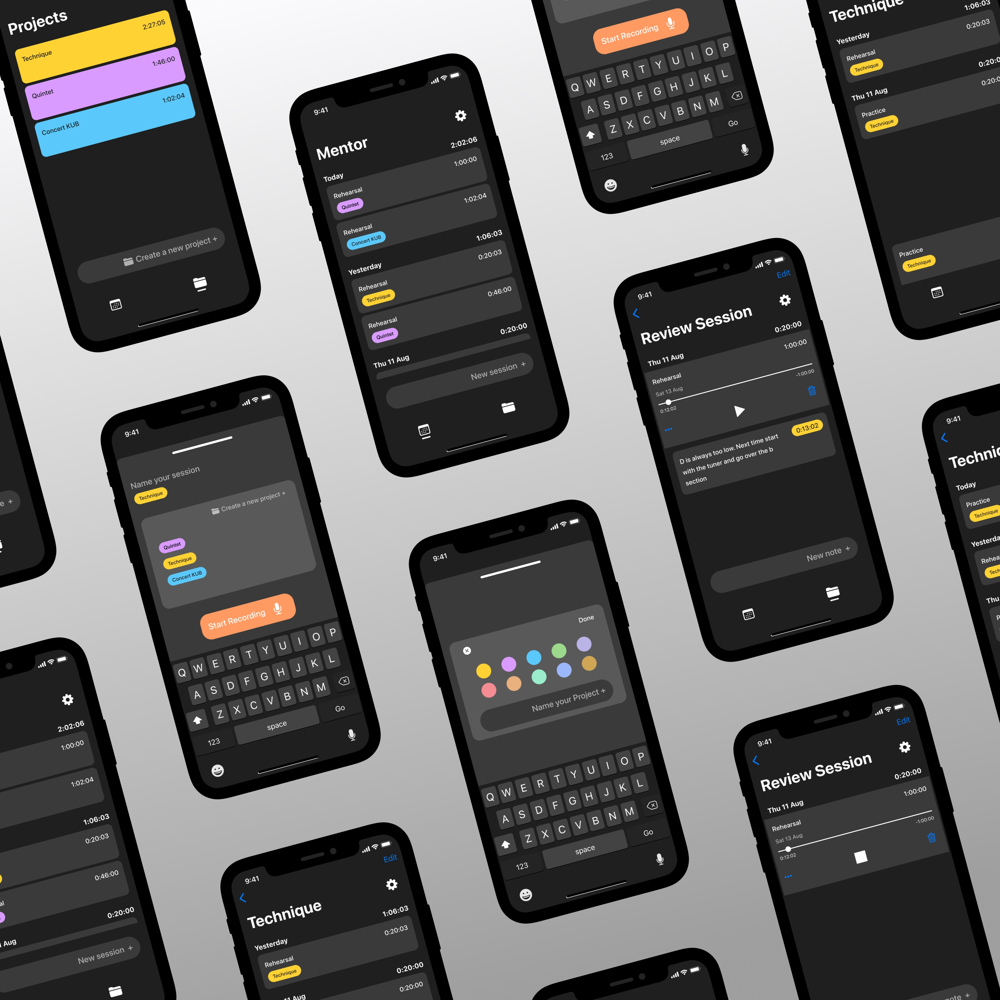
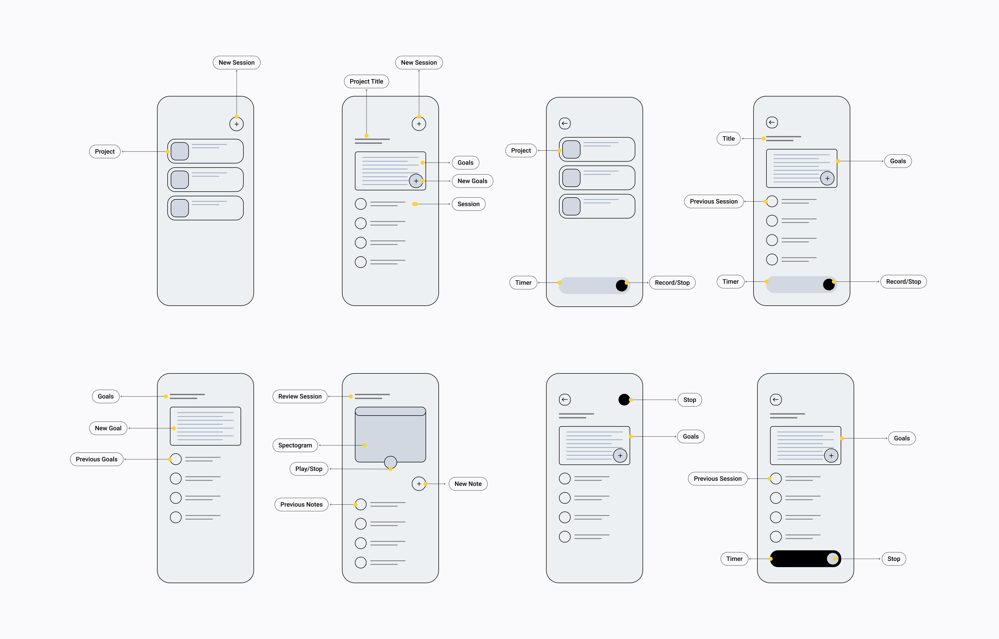
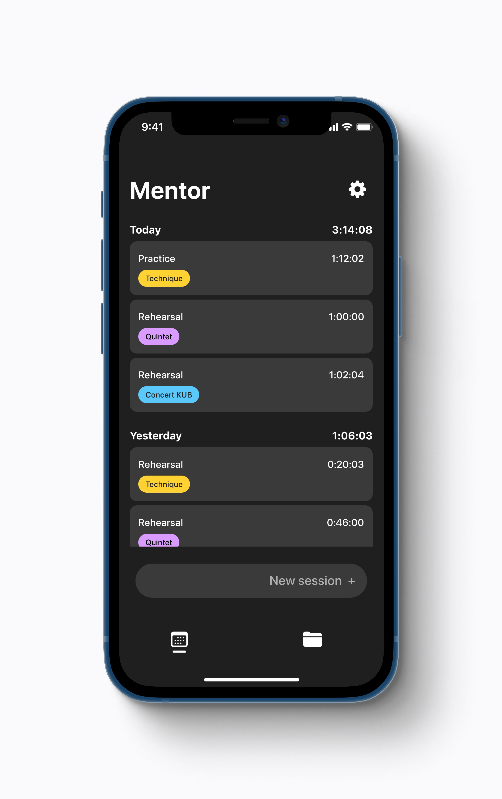
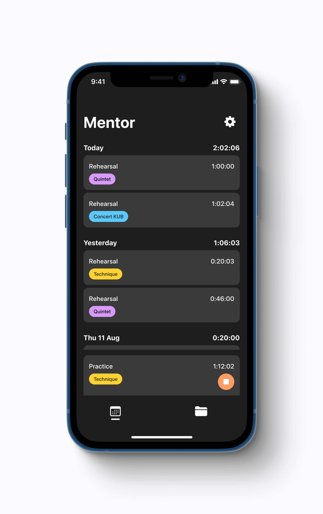
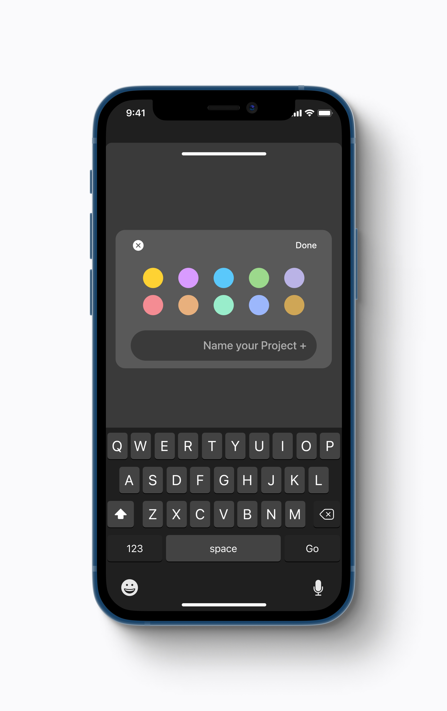
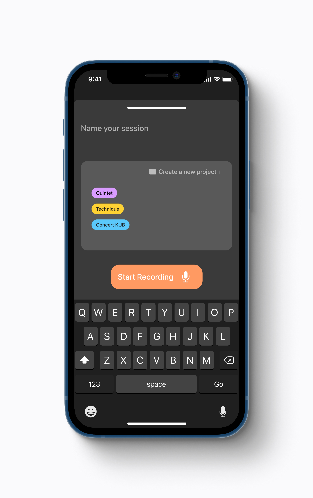
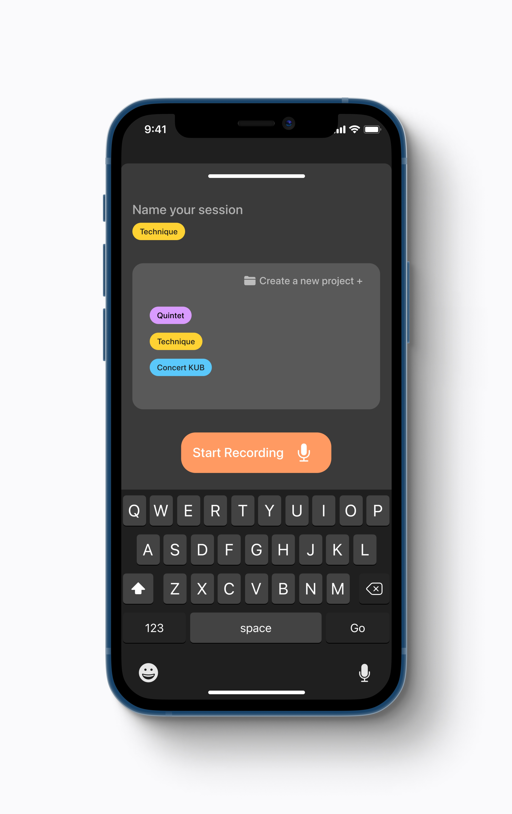
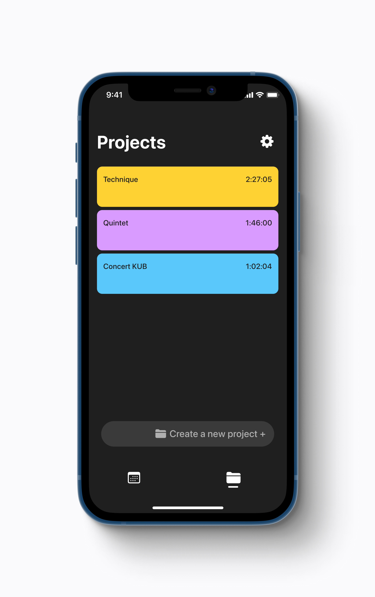
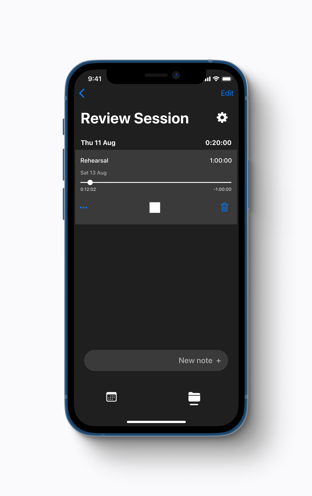
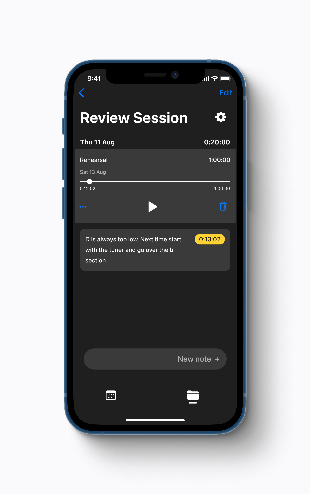

Overview
The main focus was making the tasks easy and intuitive to accomplish. From what I observed this was successful although I identified moments where the users lacked proper feedback. I learned that providing feedback to any input and cues to help users locate themselves within the app are super important to help them successfully accomplish their goals.

Kickoff
This project was inspired by the book Peak, written by Anders Ericsson and Robert Pool. The book is centred around their research on learning strategies and specifically looked at peak performance fields, like music and sports. They found that a key element distinguishing those who reach the top of their fields was something called deliberate practice. Deliberate practice refers to the notion that developing a skill does not only come down to the amount of time spent practicing but to the quality of that practice. Here are a few aspects that characterise deliberate practice and are crucial for learning and developing skills:
"Learning occurs outside of your comfort zone"
"Dedicated focused time is necessary to develop a skill"
"Analysing of your work and the work of others can be helpful to create a mental representation of what success looks like"
"Mistakes can be your most powerful learning opportunities"
To kickoff the project I decided on the key insights from deliberate practice that the app would leverage:
1) Feedback
2) Dedicated focus
3) Learning from mistakes
Goals and constraints
At this stage I defined the specific goals of the project as well as constraints. Based on the insights from the target users I identified two main user goals: Improve skills & track progress. I assumed that users expected to see a clear benefit from using the app. Some ways this success could be measured included:
Increased focus
Faster results compared with not using the app
Increased commitment to the practice
Progress tracked in a visual way and with an objective record
Increased awareness of areas to improve
The required features included:
Audio record sessions
Track time
Note taking
Setting goals
Review sessions
Ideation
I started by sketching out how users would accomplish certain tasks. Through this exploration I decided that having two modes to view user sessions — one chronological and one by projects — could help users accomplish the two main tasks — create a new session and review a session.

Iteration
I created wireframes to identify the essential elements that users would interact with. The main challenge of the flow turned out to be how the user inputs new information. I decided to prioritise information the user had inputed previously by offering an option to select previous projects in the form of tags. I added an option to create a new project that would prompt a new modal in order to define details for the new project.
At this stage it was time to test the designs with users. I created a prototype and conducted a round of usability studies. This was crucial to gain insights on how users interacted with the product and further iterate the designs These were the main insights from the usability study:
Feedback
Users were confused about their location within the app when asked to look for one of the projects. The app needed a visual cue to communicate to users where they were.
New session
Some users had difficulties starting a new session from the main screen. This call to action should be more prominent.
Intuitive
Overall it was intuitive for users to complete the tasks.








Takeaways
The psychology of learning is something that captivates me and I often find myself looking for opportunities to use technology to enhance the learning experience. This project was inspired by research on practice techniques from peak performance fields like music and sports. I explored how to make use of these techniques to learn and develop skills.
The main focus was making the tasks easy and intuitive to accomplish. From what I observed this was successful although I identified moments where the users lacked proper feedback. I learned that providing feedback to any input and cues to help users locate themselves within the app are super important to help them successfully accomplish their goals.